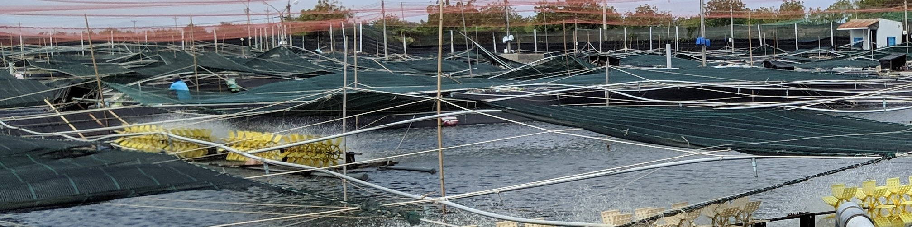

Welcome to the personal website for Erlend Dancke Sandorf
Marie Sklodowska-Curie Research Fellow, Environmental Economist and Choice Modeller
The INSPiRE Project
The Influence of Information Search on Preference Formation and Choice
Read more

Sustainable Acquaculture in Vietnam
Praesent commodo cursus magna, vel scelerisque nisl consectetur.
Read more